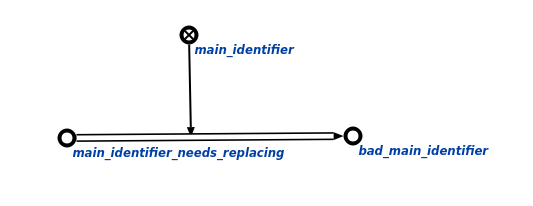
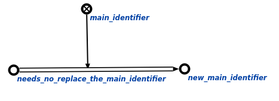

Задачей Команда замены основного идентификатора предназначена для удаления старого основного идентификатора и установка нового, выбранного пользователем. Первым аргументом команды является узел, в котором требуется заменить основной идентификатор. Вторым аргументом команды является файл на который требуется заменить текущий узел. Результатом выполнения команды является исправленный основной идентификатор данного узла. Пример замены основного идентификатора показан ниже (слева - исходный граф для замены основного идеттификатора, справа - исправленный в соответствии с нужным основным идентификатором):

